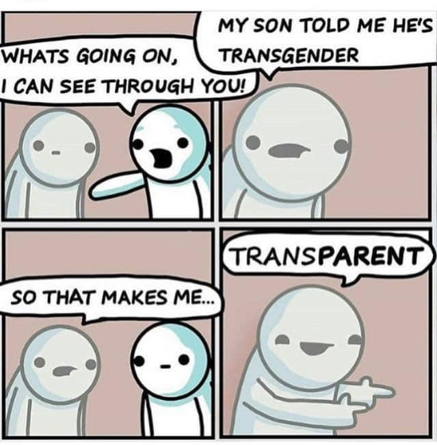
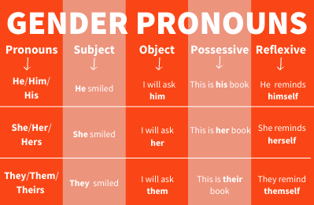

Transgender
Awareness
Month
Presented by
Alliance for Equality
(Greeley’s GSA)
with the Applied
Programming Club
WHAT DOES IT MEAN
TO BE TRANSGENDER?
Being transgender is having a gender identity
that doesn’t align with one’s birth sex.
As of 2022, around 0.5% of all U.S. adults and
1.4% of youth (aged 13-17) identify as transgender.
That’s about 1.6 million people in total.
(In New York, the percentage among youth is 3.0%.)
This includes:
- people born female who identify as male
- people born male who identify as female
- people who identify as genderqueer,
gender-neutral and/or gender-free
(male-to-female) (MTF)
(female-to-male) (FTM)
It’s completely natural for somebody to be transgender!
TRANS AWARENESS WEEK
November 13–17, 2023
Third week of November
A time to honor and uplift trans communities.
To demonstrate awareness, solidarity and drive
in the fight for justice for trans folks everywhere.
Source: NBC News
TRANSGENDER PARENTS DAY
November 5, 2023
First Sunday of November
Created in 2009, this holiday is similar to
Mother’s and Father’s days. It recognizes
parents of those who are transgender as
well as parents who are trans themselves.
It uplifts trans caregivers, moving
beyond gender-binary labels to
celebrate strong, supportive
parenthood.
Source: NBC News
From: theodd1sout
ABOUT PRONOUNS
Source: YWCA
WHAT ARE THEY?
Pronouns are words used in place of full names to refer to people
who are currently talking ("I" or "you") or people being talked about
in the third person ("she/her," "he/him," and "they/them").
Since some pronouns are gendered ("she/her" and "he/him"),
we must be considerate about how we use them in order to create
an environment as inclusive as possible.
WHY DO THEY MATTER?
How many times today has someone called you by your name or a pronoun? Many times,
most likely. Imagine that a family member, a classmate, or a friend keeps calling you
by the wrong pronoun or name, even after you correct them.
Being misgendered – someone using the incorrect pronouns to refer to you – can be
uncomfortable and hurtful. And accidentally misgendering someone can be difficult
for both parties.
Asking for and providing pronouns help foster comfortable, assumption-free
interactions. Using the correct name and pronouns for somebody shows basic respect
and helps affirm their identity.
USING SINGULAR THEY/THEM
These pronouns are structured in the same way as
the plural pronouns, but instead refer to a singular
person who typically feels like they don’t identify
themselves with "he" or "she" pronouns.
Per the APA Style, a singular "they" is the preferred
generic gender-neutral pronoun, rather than "he/she".
PRONOUN ETIQUETTE TIPS
- If you don’t know someone’s pronouns, it’s okay to ask
- Always use someone’s preferred pronouns unless you’ve
been asked not to for safety or privacy concerns
- If you make a mistake, apologize and move on. If
others misgender someone, try to gently correct them
ABOUT TYPES OF ATTRACTION
There are four main types of attraction which can combine in different ways.
There’s sexual attraction, which is finding someone attractive, finding them
sexually desirable, and wanting sexual contact with them (in whatever way).
Romantic attraction, on the other hand, is finding someone attractive in the sense
of wanting a romantic relationship with them, in whatever way. Platonic attraction
is basically romantic attraction without wanting a romantic relationship, and just
finding someone a cool person without wanting to be very emotionally intimate with
them. Aesthetic attraction is finding someone attractive or beautiful (the equivalent
of finding a painting or landscape attractive).
These different types can be all present at once or one not be present in a certain
situation. To refer to someone who doesn’t feel a certain kind of attraction, you use
the prefix a- then the type of attraction (asexual, aromantic).
GENDER VS. SEX VS. SEXUALITY
Gender is how you view yourself in regards to social and
societal connotations that come with a certain identity.
Sex is a biological feature which can be assigned at birth
(whether correct or incorrect in the case of intersex people).
By definition, sex is male, female, or intersex.
Sexuality is your attraction towards other people in a
sexual or romantic sense. These can all be combined in
different ways.
Source: Centre for Sexuality
CHALLENGES AND RESOURCES
There are more than 300,000 school-aged
transgender children in the US. 45.4% of them
live in the red states in the diagram, meaning
they’re unable to get gender-affirming care.
In addition, some of these states such as
Oklahoma, Texas, and South Carolina are
attempting to restrict gender-affirming care
up to the age of 26.
Read more about anti-trans state legislation
at GLAAD and battling disinformation about
trans rights at the Human Rights Campaign.
Source: Human Rights Campaign
Follow us on Instagram: